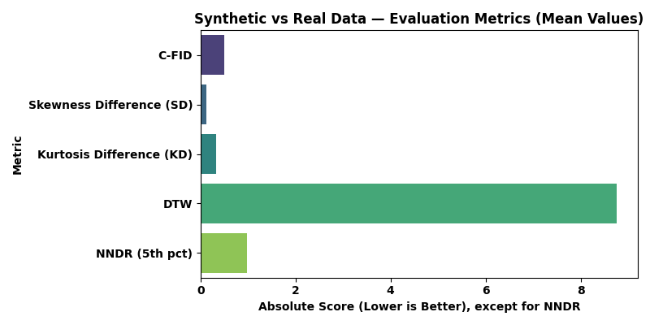
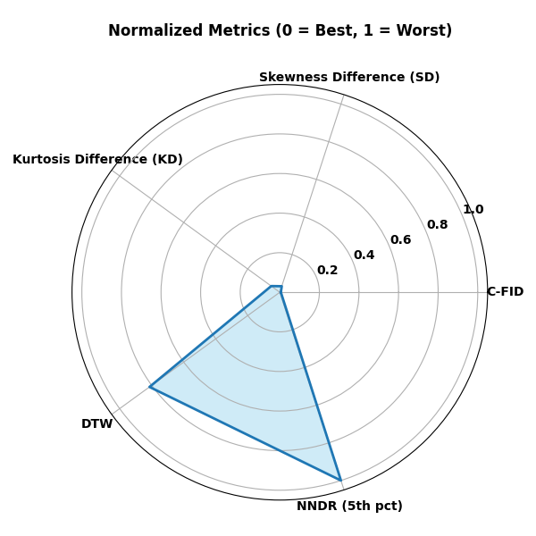

Synthetic Data Evaluation Report
Metric Definitions
- C-FID: Conditional Frechet Inception Distance - measures similarity of distributions.
- Skewness Difference (SD): Measure of asymmetry between real and synthetic data.
- Kurtosis Difference (KD): Measure of tail heaviness/ outliers between real and synthetic data.
- DTW: Dynamic Time Warping distance - compares data sequences in time series data.
- NNDR (5th pct): Nearest Neighbor Distance Ratio (5th percentile) - highlight privacy risks if synthetic points too similar to real points.
Score Summary
C-FID : 0.451 — Good
Skewness Difference (SD) : 0.307 — Good
Kurtosis Difference (KD) : 0.226 — Good
DTW : 8.766 — Needs Work
NNDR (5th pct) : 0.975 — Needs Work
Barplot of Scores

Normalised Score Range
Radar Plot of Normalized Scores
